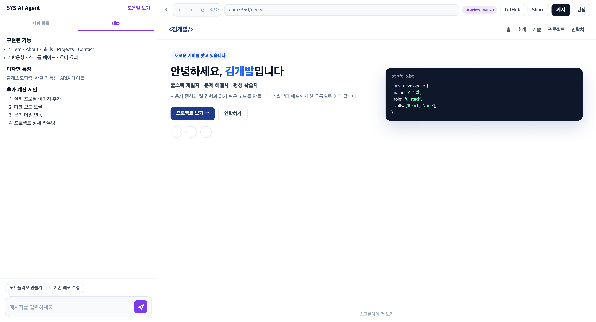

1 2 3 4Devely 1.0 Lite · AI Workspace
대화
에이전트 답변·구현 요약이 쌓인다. ‘채팅 목록’에서 세션을 이어가거나 새 대화를 연다. ‘도움말 보기’로 튜토리얼을 다시 연다.
자연어 입력
메시지 입력 후 전송 또는 Enter. 칩은 입력창에 초안만 채운다. 생성·수정·배포·도메인·인프라를 자연어로 요청한다.
Docker 미리보기
컨테이너에서 실제 실행 결과를 클릭·입력으로 확인한다. preview branch 경로를 보여 준다. 외부 공개 URL은 기본 발급하지 않는다.
게시
승인 후 배포 파이프라인으로 이어진다. Share · GitHub · 편집은 공유·레포·코드 보기로 연결한다.
■ 연결되는 기능
: 프로젝트 Overview
: Docker 미리보기
: 승인 / 거절
: 배포 · 도메인 · 인프라